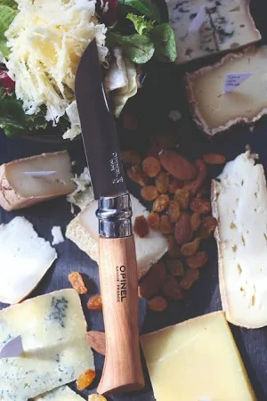
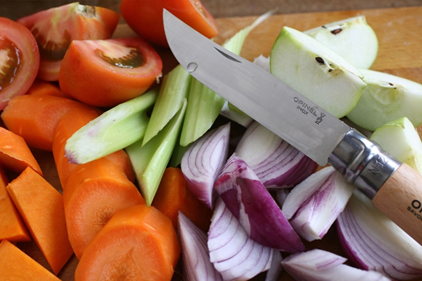

Couteaux Opinel
Opinel N°7
Le bon vieux classique, idéal pour toutes vos aventures, à sa place dans votre poche.
Prix: 10.99 €
Opinel N°12
Un couteau robuste pour la petite coupe d'arbustes, arbres fruitiers et pour les tâches plus exigeantes.
Prix: 19.99 €